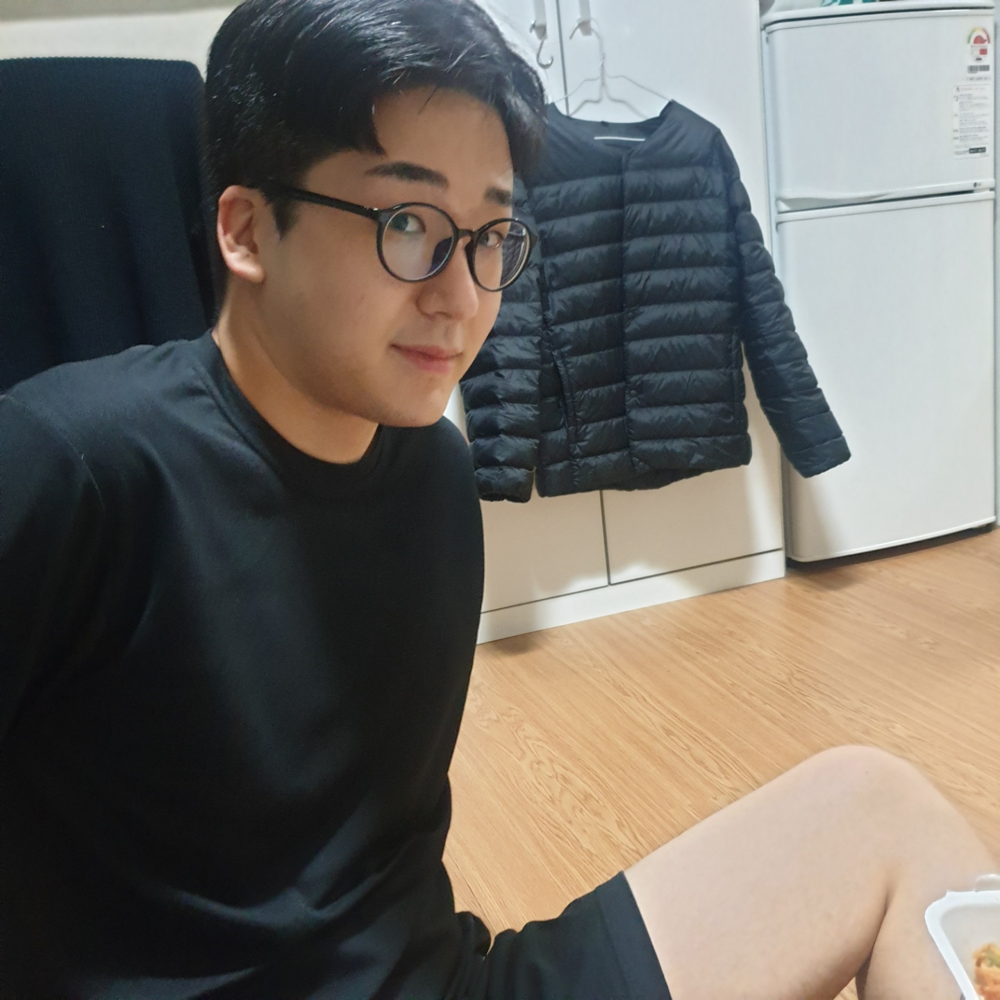

👦생일 : 03.27 / 혈액형 B형
👨💼국민대학교 경영학부 4학년
🦁국민대학교 멋쟁이사자처럼 10기 아기사자
-성격은 내성적인 편 입니다. MBTI가 매번 바뀌는데 맨 앞자리 I만 안 바뀌어요ㅜㅜ
-가족과 함께 있는 시간을 좋아합니다. 전역하고 코로나가 시작된 후로는 거의 가까운 사람들만 만나고 있어요.
-제 일상을 담은 사진도 약간의 TMI로 첨부했으니 다른 페이지에서 확인해주세요!
-비전공자로서 컴퓨터를 공부하다보니 같은 관심사를 가진 지인이 많이 부족합니다. 멋사 여러분! 친하게 지내고 싶어요.
이번 학기 모두 화이팅!